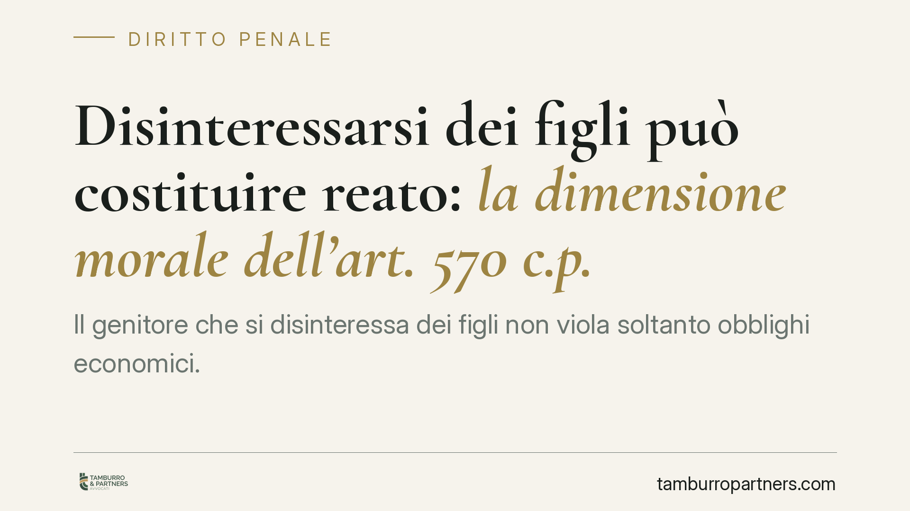

Disinteressarsi dei figli può costituire reato: la dimensione morale dell'art. 570 c.p.
Il genitore che si disinteressa dei figli non viola soltanto obblighi economici. Secondo un recente orientamento della Cassazione, la trascuratezza morale e affettiva potrebbe integrare un'autonoma violazione degli obblighi di assistenza inerenti alla qualità di genitore, distinta dal mancato mantenimento. La questione tocca la vita di molte famiglie separate e merita di essere compresa nei suoi presupposti concreti, al di là del titolo d'effetto.

Il punto di partenza
Si è diffusa la notizia di una pronuncia della Corte di Cassazione secondo cui disinteressarsi dei figli sul piano morale e affettivo potrebbe costituire reato in sé, a prescindere dal versamento dell'assegno di mantenimento.
Una precisazione doverosa: il numero e l'anno della sentenza circolati online non risultano al momento verificabili e presentano profili di incoerenza. Trattiamo quindi il principio come espressione di un orientamento giurisprudenziale da confermare, non come dato normativo consolidato. Il tema, tuttavia, è reale e ricorrente nelle aule.
Inquadramento normativo
L'art. 570 del codice penale punisce chi, violando gli obblighi di assistenza inerenti alla responsabilità genitoriale (terminologia introdotta dal D.Lgs. 154/2013, che ha sostituito la vecchia "potestà"), si sottrae ai doveri che derivano dalla sua qualità di genitore o di coniuge.
La norma non tutela solo l'aspetto economico. Il primo comma e, in particolare, le condotte tipizzate nel secondo comma (far mancare i mezzi di sussistenza, malversare o dilapidare i beni) convivono con una dimensione più ampia: quella dell'assistenza morale e materiale che fa capo al ruolo genitoriale. È su questa base che la giurisprudenza riconduce il disinteresse affettivo entro il perimetro dell'art. 570 c.p.
Diverso è l'art. 570-bis c.p., introdotto nel 2018, che sanziona in modo specifico il mancato rispetto degli obblighi di natura economica stabiliti dal giudice in sede di separazione, divorzio o affidamento. Qui l'oggetto della tutela è circoscritto: il patrimonio e il mantenimento.
Perché la dimensione morale rientra nell'art. 570 c.p.
Il ragionamento è sistematico. La qualità di genitore comporta un fascio di doveri che non si esaurisce nel denaro: vicinanza, cura, partecipazione alla crescita. Quando questi vengono meno in modo volontario e abituale, la giurisprudenza ritiene integrata la violazione degli "obblighi di assistenza" previsti dalla norma.
Attenzione però: non basta l'assenza fisica o la freddezza del rapporto. Servono indici concreti. I giudici valutano, ad esempio, la totale e protratta mancanza di contatti, l'indifferenza alle esigenze educative e sanitarie, il rifiuto sistematico di esercitare il diritto-dovere di visita. Deve trattarsi di una condotta reiterata, non di un episodio isolato.
Sul piano dell'elemento soggettivo è richiesto il dolo: la coscienza e volontà di sottrarsi agli obblighi. Un disinteresse colposo, dovuto a difficoltà oggettive, non integra il reato.
Il nodo del ne bis in idem e del concorso di reati
Il principio del *ne bis in idem* vieta di essere giudicati due volte per lo stesso fatto. Qui non opera, perché i fatti sono diversi: l'art. 570 c.p. colpisce la violazione dell'assistenza morale e materiale, l'art. 570-bis l'inadempimento economico stabilito dal giudice.
Si configura quindi, in astratto, un concorso di reati: il genitore che non versa l'assegno e al tempo stesso ignora del tutto i figli può rispondere di entrambe le fattispecie. Va però detto con chiarezza che la delimitazione tra le due norme, e in particolare il loro cumulo, resta questione dibattuta in dottrina e giurisprudenza. L'esito dipende sempre dalla ricostruzione del caso concreto.
Implicazioni pratiche
Per il genitore separato, il messaggio è duplice. Da un lato, pagare puntualmente il mantenimento non mette automaticamente al riparo da contestazioni se manca ogni forma di presenza. Dall'altro, l'accusa di disinteresse morale non può basarsi su impressioni: va provata con elementi oggettivi e circostanziati.
Per il genitore convivente o affidatario, la pronuncia offre uno strumento in più, ma non un automatismo. Occorre documentare con precisione la condotta omissiva dell'altro.
Un avvertimento difensivo essenziale: va sempre distinto il disinteresse volontario dall'allontanamento causato da ostacoli posti dall'altro genitore o da impossibilità oggettive. Chi viene tenuto lontano dai figli contro la propria volontà non commette reato; al contrario, può a sua volta tutelarsi.
Cosa fare in concreto
- Documentate ogni tentativo di contatto con i figli: messaggi, richieste di incontro, comunicazioni scolastiche e sanitarie.
- Non confondete l'inadempimento economico con quello morale: sono violazioni distinte e vanno affrontate separatamente.
- Conservate prove degli eventuali ostacoli frapposti dall'altro genitore, se siete voi a essere tenuti lontani.
- Verificate la fonte di ogni notizia giurisprudenziale prima di assumere decisioni: un orientamento non è legge certa.
- Rivolgetevi a un legale prima di depositare querela o di rispondere a una contestazione: la valutazione degli indici concreti è decisiva.
---
*Contributo informativo a cura di Tamburro & Partners - Avv. Giuseppe Tamburro. Non costituisce parere legale.*
Ogni condominio ha una storia a sé.
Se gestisci un'amministrazione e vuoi un confronto su una specifica questione condominiale, scrivi allo studio. Ti rispondiamo entro un giorno lavorativo.